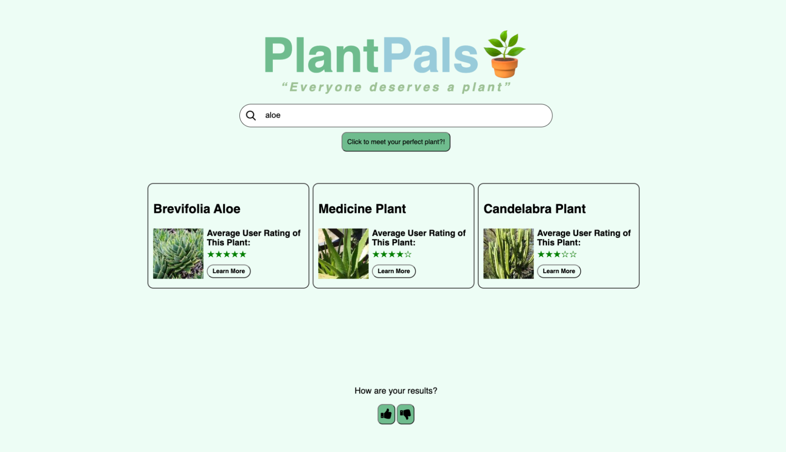

Everyone Deserves a Plant
Plant Pals operates as a search engine that allows users to find their ideal indoor plant depending on the characteristics they search (ie has flowers, little watering, etc.). The backend utilized text querying concepts such as cosine similarity and jaccard to match the user's typed input to a plant's description.
Additionally, Rocchio's algorithm was used so that users could improve their search results depending on whether they liked the ones they were given.